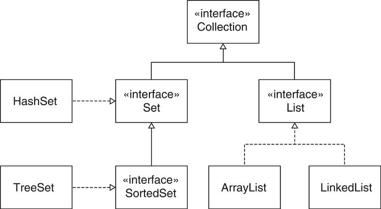
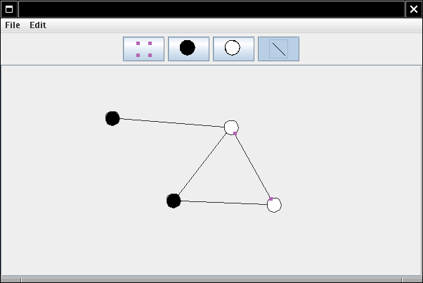

Object-Oriented Design & Patterns
Cay S. Horstmann
Chapitre 8
Frameworks (Cadres)

Matière du chapitre
- Frameworks (Cadres)
- Les applets comme un simple framework
- Le framework pour les collections
- Le framework pour l'éditeur graphique
- Améliorer le framework pour l'éditeur graphique
Frameworks (Cadres)
- Ensemble de classes coopérant
- Aménage les mécanismes essentiels pour un domaine d'intérêt
- Exemple : Swing est un framework IUG (interface utilisateur graphique)
- Framework != patron de conception
- Un framework typique utilise plusieurs patrons de conception
Frameworks d'application
- Implémente les services communs d'un type d'application
- Le programmeur forme les sous-classes des classes du framework
- Le résultat est une application
- Inversion du contrôle : le framework contrôle le flot d'exécution
Applets
- Applet : Un programme Java qui s'exécute dans un navigateur
- Le programmeur crée une sous-classe de Applet ou JApplet
- Réécrit
init/destroy
start/stop
paint
Applets

Applets
Exemple d'applet
- Montrer une banière de déroulement
- init lit les paramètres
- start/stop démarre et arrête le temporisateur
- paint dessine la surface de l'applet
- Ch8/applet/BannerApplet.java
Exemple d'applet

Applets comme un framework
- Le programmeur d'applet utilise l'héritage
- La classe de l'applet s'occupe du comportement générique (interaction
avec le navigateur)
- Inversion du contrôle : applet appelle init, start, stop, destroy
Framework des collections
- La bibliothèque Java fournit des structures de données traditionnelles
- Fournit des services utiles (Collections.sort, Collections.shuffle)
- Framework : les programmeurs peuvent fournir des structures de données
et des services additionnels
- Les nouvelles structures fonctionnent automatiquement avec les services
- Les nouveaux services fonctionnent automatiquement avec les structures de
données
Framework des collections : Types interface
- Collection : le type interface collection le plus général
- Set : une collection non ordonnée qui ne permet pas la
duplication des éléments
- SortedSet : un ensemble dont les éléments sont parcourus dans
un ordre trié
- List : une collection ordonnée
Framework des collections : Classes
- HashSet : implémentation d'un ensemble utilisant le hachage
pour localiser les éléments
- TreeSet : implémentation ordonnée d'un ensemble gardant les
éléments dans un arbre binaire équilibré
- LinkedList et ArrayList : deux implémentations du type
interface List
Framework des collections

Type interface Collection<E>
- Une collection stocke les éléments d'une certaine façon
- Des structures de données différentes ont différentes stratégies de
stockage
boolean add(E obj)
boolean addAll(Collection c)
void clear()
boolean contains(E obj)
boolean containsAll(Collection c)
boolean equals(E obj)
int hashCode()
boolean isEmpty()
Iterator iterator()
boolean remove(E obj)
boolean removeAll(Collection c)
boolean retainAll(Collection c)
int size()
E[] toArray()
E[] toArray(E[] a)
Type interface Iterator<E>
- Un itérateur traverse les éléments d'une collection
boolean hasNext()
E next()
void remove()
Classe AbstractCollection
- Collection est une interface lourde
- Convient aux clients, ne convient pas aux développeurs
- Plusieurs méthodes peuvent être implémentées à l'aide des autres (Template method !)
- Exemple: toArray
public E[] toArray()
{
E[] result = new E[size()];
Iterator e = iterator();
for (int i = 0; e.hasNext(); i++)
result[i] = e.next();
return result;
}
Classe AbstractCollection
- On ne peut mettre les méthodes "template" dans un type interface
- On les met dans la classe AbstractCollection
- AbstractCollection est une superclasse convenable pour les
développeurs
- Seulement deux méthodes ne sont pas définies : size, iterator
Ajouter une nouvelle classe au framework
Ajouter une nouvelle classe au framework

Ensembles
- Le type interface Set n'ajoute aucune méthode à Collection !
- Conceptuellement, les ensembles sont des sous types des collections
- Les ensembles ne stockent pas les doublons d'un même élément
- Les ensembles ne sont pas ordonnés
- Interface séparée : un algorithme peut requérir un Set
Listes
- Les listes sont ordonnées
- Chaque position dans la liste peut être accédée avec un index entier
- Les méthodes du sous type :
boolean add(int index, E obj)
boolean addAll(int index, Collection<? extends E> c)
E get(int index)
int indexOf(E obj)
int lastIndexOf(Object obj)
ListIterator<E> listIterator()
ListIterator<E> listIterator(int index)
E remove(int index)
E set(int index, E element)
List<E> subList(int fromIndex, int toIndex)
Itérateurs de liste
- Accès par indice
- Comportement bidirectionnel
- Les méthodes du sous type :
int nextIndex()
int previousIndex()
boolean hasPrevious()
E previous()
void add(E obj)
void set(E obj)
Classes pour les listes
- ArrayList
- LinkedList
- Accès indexé est possible pour les listes chaînées, mais c'est lent
- Faiblesse dans la conception
- Résolution partielle dans Java 1.4 : type interface RandomAccess
Classes pour les listes

Opérations optionnelles
- Plusieurs opérations sont étiquettées comme "optionnelle"
- Exemple: Collection.add, Collection.remove
- L'implémentation de base (AbstractCollection) lève une exception
- Pourquoi avoir des opérations optionnelles ?
Vues
- Vue = collection qui montre des objets stockés ailleurs
- Exemple: Arrays.asList
- String[] strings = { "Kenya", "Thailand", "Portugal" };
List view = Arrays.asList(strings)
- Ne copie pas les éléments !
- On peut utiliser une vue pour les services communs
otherList.addAll(view);
Vues
- get/set sont définis pour accéder au tableau sous-jacent
- La vue Arrays.asList n'a pas les opérations add/remove
- On ne peut agrandir/rétrécir le tableau sous-jacent
- Plusieurs genres de vues :
lecture seulement
modifiable
redimensionnable
. . .
- Les opérations optionnelles évitent l'élargissement des interfaces
- Une décision de conception controversée
Framework pour l'éditeur graphique
- Domaine d'application : édition interactive des diagrammes
- Un graphe est composé de sommets (nodes) et d'arêtes (edges)
- Le diagramme de classe :
les sommets représentés par des rectangles
les arêtes représentées par des flèches
- Diagramme d'un circuit électronique :
les sommets sont des transistors, des résistances
les arêtes sont des fils
Un framework pour l'éditeur graphique
- Approche traditionnelle : le programmeur repart du début pour chaque type
d'éditeur
- Approche avec framework : le programme étend les classes graph, node, edge
- Le framework prend en charge UI, load/save, ...
- Notre framework est simple
- Violet utilise une extension de ce framework
Interface usager
- La barre d'outils en haut
- Bouton de sélection pour sélectionner les sommets et les arêtes
- Boutons pour spécifier le type de sommet et d'arête courant
- Menu
- Aire pour composer le graphe
Interface usager

Opérations de la souris
- Cliquer sur un espace vide : le sommet courant est inséré
- Cliquer sur un sommet ou un arête : il est sélectionné
- Faire glisser un sommet quand un arête est sélectionné : connecte
les sommets
- Faire glisser un sommet quand un arête n'est pas sélectionné : déplace
le sommet
Séparer des responsabilités
- Diviser le code entre
- Affichage dépend de l'application (p.ex. transistor)
- Localisation de clique dépend de l'application (forme de sommet
varie)
- Framework dessine la barre d'outils
- Framework fait l'observateur de la souris
Ajouter des sommets et des arêtes
- Framework dessine la barre d'outils
- Comment sait-il quels sommets/arrêtes dessiner ?
- L'application donne une liste de sommets et d'arêtes au framework lors du
démarrage
- Comment l'application spécifie-t-elle les sommets et les arêtes
?
- Le nom de la classe ? ("Transistor")
- Objets Class ? (Transistor.class)
- Objets Node, Edge ? (new Transistor())
Ajouter des sommets et des arêtes
- Les objets sont plus flexibles que les classes
- new CircleNode(Color.BLACK)
new CircleNode(Color.WHITE)
- Lorsque l'usager insère un nouveau sommet, celui choisi dans la
barre d'outils est cloné
Node prototype = node of currently selected toolbar
button;
Node newNode = (Node) prototype.clone();
Point2D mousePoint = current mouse position;
graph.add(newNode, mousePoint);
- Exemple du patron PROTOTYPE
Patron PROTOTYPE
Contexte
- Un système instancie les objets des classes qui ne sont pas connues
lorsque le syst ème est construit.
- On ne veut pas avoir une classe séparée pour chaque genre d'objet.
- On veut éviter une hiérarchie de classes séparée dont la responsabilité
est de créer des objets.
Solution
- Définir un prototype de type interface qui est commun à tous les objets
créés.
- Fournir un objet prototype pour chaque genre d'objet créé par le système.
- Cloner l'objet prototype chaque fois qu'un nouvel objet de ce genre est
requis.
Patron PROTOTYPE

Patron PROTOTYPE
Nom dans le patron de
conception
|
Vrai nom (éditeur
de graphe)
|
Prototype
|
Node
|
ConcretePrototype1
|
CircleNode
|
Creator
|
Le GraphPanel qui s'occupe de
l'opération de la souris pour ajouter de nouveaux sommets
|
Classes du framework
- Le programmeur du framework implémente les types interface Node/Edge
- draw dessine le sommet/l'arête
- getBounds retourne le rectangle délimitant le graphe (pour
calculer la taille totale du graphe pour le défilement)
- Edge.getStart, getEnd pour obtenir les sommets de début
et de fin
- Node.getConnectionPoint calcule les points d'attache sur la
frontière de la forme
- Edge.getConnectionPoints pour obtenir les coordonnées de début
et de fin (pour sélectionner la forme)
- clone redéfinie pour être publique
Points de connexion d'un sommet

Classes du framework
Classes du framework
- Graph agrège les sommets et les arêtes
- Les sous classes redéfinissent les méthodes
public abstract Node[] getNodePrototypes()
public abstract Edge[] getEdgePrototypes()
- Ch8/graphed/Graph.java
Classes IU du framework
- GraphFrame : un cadre qui gère la barre d'outils, la barre menu
et le panneau du graphe.
- ToolBar : un panneau contenant les boutons à bascule
réprésentant
les icônes pour le sommet et l'arête.
- GraphPanel : un panneau qui affiche le graphe et qui s'occupe
des
cliques et des glissements de la souris pour les commandes d'édition.
- Les programmeurs d'application n'ont pas besoin d'étendre ces classes.
Une instance du framework
- Application simple
- Dessiner des sommets blancs et noirs
- Joindre les sommets avec une ligne droite
Responsabilités du programmeur
- Pour chaque type de sommet et d'arête, définir une classe qui implémente le
type interface Node
ou Edge.
- Fournir toutes les méthodes requises, telles que pour afficher et pour
tester l'inclusion.
- Définir une sous classe pour la classe Graph et fournir getNodePrototypes,
getEdgePrototypes
- Fournir une classe avec une méthode main
Une instance du framework

Une instance du framework
Code générique pour le framework
- Un framework libère le programmeur d'application de la programmation fastidieuse
- Un framework peut réaliser beaucoup de tâches sans connaître
les types des sommets et des arêtes
- Analyser deux scénarios
- Ajouter un nouveau sommet
Ajouter un nouveau sommet
public void mousePressed(MouseEvent event)
{
Point2D mousePoint = event.getPoint();
Object tool = toolBar.getSelectedTool();
...
if (tool instanceof Node)
{
Node prototype = (Node) tool;
Node newNode = (Node)prototype.clone();
graph.add(newNode, mousePoint);
}
...
repaint();
}
Ajouter un nouveau sommet

Ajouter un nouvel arête
- Premièrement, vérifier si la souris a été enfoncée à l'intérieur d'un
sommet existant
public Node findNode(Point2D p)
{
for (int i = 0; i < nodes.size(); i++)
{
Node n = (Node) nodes.get(i);
if (n.contains(p)) return n;
}
return null;
}
Ajouter un nouvel arête
- mousePressed:
- Vérifier si le point de la souris est à l'intérieur du sommet
- Vérifier si un arête est sélectionné
- Le point de la souris est le départ d'une bande élastique
- mouseDragged:
- Le point de la souris est la fin d'une bande élastique; redessiner
- mouseReleased:
- Ajouter l'arête au graphe
Ajouter un nouvel arête

Améliorer le framework
- Éditer les propriétés pour un sommet et un arête
- Couleurs du sommet
- Styles d'arête (solide/pointillé)
- Amélioration du framework : Le menu Edit->Properties affiche un
dialogue de propriété
Améliorer le framework

Améliorer le framework
- Comment implémenter le dialogue ?
- Résolu dans le chapitre 7-- propriétés d'un bean !
- CircleNode expose la propriété color :
Color getColor()
void setColor(Color newValue)
- L'éditeur de propriété modifie automatiquement la couleur !
Utiliser les améliorations du framework
- Ajouter une ligne pointillée
- Définir le type énuméré LineStyle
- Deux instances LineStyle.SOLID, LineStyle.DOTTED
- Ajouter la propriété lineStyle property à LineEdge
- LineStyle a la méthode getStroke()
- LineEdge.draw appelle getStroke()
- Fournir l'éditeur de propriété pour le type LineStyle
- L'éditeur de propriété modifie maintenant le style de ligne !
Une autre instance du framework
- Éditeur de diagramme de classes UML
- "Violet lite"

Une autre instance du framework
- RectangularNode
- SegmentedLineEdge
- GeneralPathEdge utilise le chemin général pour tester l'inclusion
- ArrowHead, BentStyle énumère les styles de ligne et de
flèche
- MultiLineString est la propriété pour les compartiments de classe
- ClassNode, ClassRelationshipEdge, ClassDiagramGraph
- Pas de changement pour le framework de base !
Propriétés pour l'arête

Améliorer le framework II
- Violet est basée sur une amélioration du framework du livre
- Elle ajoute plusieurs options
- exportation des graphiques
- On peut ajouter 3 classes d'éditeur de graphes simples au framework
- L'application suit l'évolution du framework sans coût pour le programmeur
de l'application
Améliorer le framework II